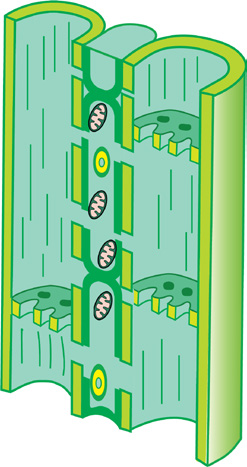

96
Student’s Book - Form Two
8.
Describe the
(a)
movement of water through the root cells to the xylem;
(b)
structure of a phloem tissue;
and
(c)
cross-section of a dicot stem.
9.
Use the diagrams below to answer
the questions that follow:

(a)
(b)
(i)
Explain the role of tissues
(a) and (b).
(ii) Describe adaptations of
each tissue.
10. Answer the following questions:
(a)
Explain four plant features
and four environmental
factors that affect the rate of transpiration.
(b)
Explain the significance
of transpiration in plants.
(c)
Differentiate transpiration
pull from root pressure.
11. What is the importance of root
hairs in plants?
Transport in plants
Involves movement of
Water and minerals
Sugar
through
(iv)______
(iii)______
(ii)______
(v)______
(vi)______
Pressure flow
driven by
to
to
driven by
(i)______
leaves
through
from
from
08/04/2026 10:18:28